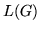

Use
HSGEN is invoked by the command line
HSGen [options] wdnet dictfile
where dictfile is a dictionary containing all of the words
used in the word network stored in wdnet. This dictionary
is only used as a word list, the pronunciations are ignored.
The available options are
- -l
- When this option is set, each generated sentence
is preceded by a line number.
- -n N
- This sets the total number of sentences generated
to be N (default value 100).
- -q
- Set quiet mode. This suppresses the printing of sentences.
It is useful when estimating the entropy of  since the
accuracy of the latter depends on the number of sentences generated.
- -s
- Compute word network statistics. When set, the number of
network nodes, the vocabulary size, the empirical entropy, the
perplexity, the average sentence length, the minimum sentence length
and the maximum sentence length
are computed and printed on the standard output.
HSLAB also supports the standard options -A,
-C, -D, -S, -T, and -V as described
in section 4.4.
Back to HTK site
See front page for HTK Authors